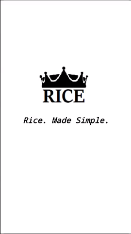
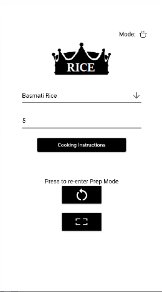
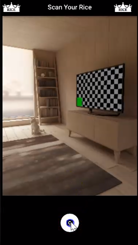
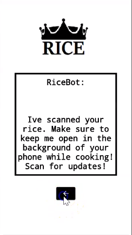

Rice King
Satirical Productivity Application
Related Links: Github
This mobile productivity application ensures perfectly cooked rice, every time.
In planning mode, the user is able to choose the quantity and type of rice they would like to cook. With integrated camera permissions, the user may snap a photograph or "scan" the rice, engaging cooking mode. As the rice cooks, the user can scan to recieve a message from "RiceBot" detailing how far along the rice is in the cooking process. The user will receive a notification when the rice is halfway cooked, and fully cooked. Never again must you panic about over or undercooking your rice, a common worry in the rice cooking community.
Features
- Flutter Notifications User engagement
- Flutter Camera Scanning rice
Media
User Interface Outline
Version 1.0.1
Splash Screen
Version 1.0.1
Splash Screen
Version 1.0.1
Prep Mode
Version 1.0.1
Scan Mode
Version 1.0.1
RiceBot
Version 1.0.1
Cooking Mode

Version 1.0.1